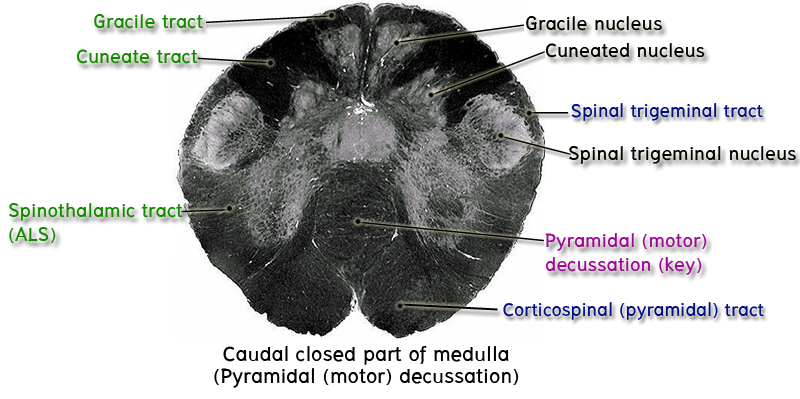

ในการศึกษา brain stem ระดับต่าง ๆ เหล่านี้
1. ระดับ caudal part of closed part of medulla หรือ ระดับ pyramidal decussation

ในระดับนี้มี key structure ที่ต้องชี้แสดงคือ pyramidal decussation ซึ่งเป็นบริเวณที่ nerve fibers ที่อยู่ใน pyramid แต่ละข้างกำลังตัดกันในแนว midline บริเวณ anterior part ของ medulla เพื่อที่จะไปเป็น contralateral lateral corticospinal tract ที่อยู่ใน lateral funiculus ของ spinal cord ฝั่งตรงข้าม
บริเวณ posterior part ให้ชี้แสดง gracile fasciculi และ cuneate fasciculi ทั้งสองข้างซึ่งเห็นเป็นกลุ่มของ nerve fibers สีเข้มที่ต่อขึ้นมาจาก posterior funiculus ของ spinal cord และถูกกั้นแยกจากกันด้วย posterior intermediate sulcus
บริเวณ lateral part ถัดจาก cuneate fasciculus ไปทาง anterior ซึ่งตรงกับบริเวณที่เห็นจาก gross specimen เป็น trigeminal tubercle ให้ชี้แสดง spinal trigeminal nucleus ซึ่งเป็นบริเวณใส ๆ และถูกคลุมอยู่ทาง superficial โดย spinal trigeminal tract
2. ระดับ rostral part of closed part of medulla หรือระดับ sensory decussation
ในระดับนี้มี key structure ที่ต้องชี้แสดงคือ internal arcuate fibers เห็นเป็นกลุ่มของ nerve fibers สีดำเข้มซึ่งประกอบด้วย axon ที่ผ่านออกจากด้านหน้าของ gracile และ cuneate nuclei แล้วทอดโค้งอ้อม central gray mass (ที่เห็นเป็น area ใส ๆ ที่อยู่รอบ ๆ central canal ซึ่งอยู่บริเวณใจกลางของ medulla) มา decussate กันบริเวณหลังกว่า pyramids แล้วรวมกันเป็น ascending tract ที่เรียกว่า medial lemniscus ให้ชี้แสดง medial lemnisci ซึ่งเห็นเป็นกลุ่มของ nerve fibers สีดำที่วางตัวอยู่ในแนว anteroposterior อยู่บนด้านหลังของ pyramid แต่ละข้าง จุดที่ internal arcuate fibers ตัดกันนั้นเรียกว่า sensory decussation หรือ decussation of medial lemnisci
บริเวณ anterior ที่สุดของ medulla ระดับนี้ให้ชี้แสดง pyramidทั้งสองข้างที่ขนาบอยู่ 2 ข้างของ anterior median fissure
บริเวณ posterior part ให้ชี้แสดง gracile fasciculi และ cuneate fasciculi ซึ่งอยู่บริเวณที่เดิม นอกจากนี้ในส่วนลึกของ fasciculi ทั้งสอง ให้ชี้แสดง gracile nuclei และ cuneate nuclei ทั้งสองข้าง ซึ่งเห็นเป็นบริเวณใส ๆ เพราะเป็นที่อยู่ของ cell body ของ neuron ที่ให้แขนง axon รวมกันเป็น internal arcuate fibers นั่นเอง